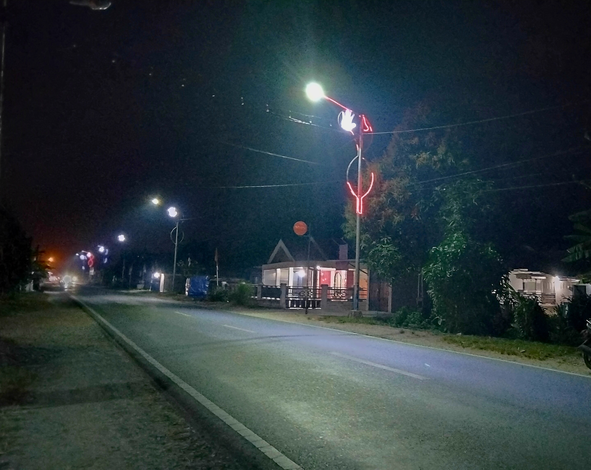

Desa Mensere terletak di wilayah Kecamatan Tebas, Kabupaten Sambas. Desa ini kaya akan potensi pertanian, sektor perkebunan rakyat yang produktif, serta kearifan budaya Melayu Sambas yang terus dijaga oleh masyarakat setempat.
Visi: Terwujudnya Desa Mensere yang Sejahtera, Maju, dan Berbudaya.
Misi: Meningkatkan tata kelola pemerintahan desa yang transparan dan pelayanan publik yang prima.
Total Penduduk
Luas Wilayah
Laki-laki
Perempuan
Kode Pos

Dalam mendukung efektivitas tata kelola pemerintahan dan pelayanan publik, Desa Mensere terbagi atas 3 wilayah dusun, 8 RW, serta 18 RT.
Dusun Bumi Asih merupakan salah satu wilayah administratif di Desa Mensere yang dihuni oleh masyarakat dengan berbagai aktivitas dan rutinitas harian yang beragam.
Dusun Lestari menjadi bagian dari wilayah Desa Mensere yang mencakup kawasan permukiman warga dengan suasana lingkungan yang tertata.
Dusun Mekar Mandiri merupakan salah satu dusun di Desa Mensere yang juga berperan dalam melengkapi struktur pembagian wilayah desa.